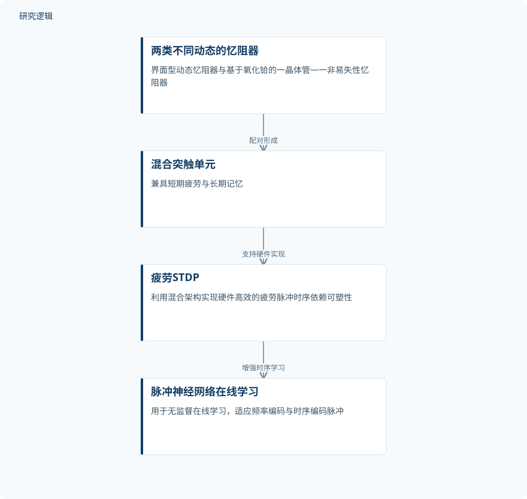

摘要解读
基于混合忆阻器阵列与疲劳脉冲时序依赖可塑性学习的脉冲神经网络
Spiking neural networks with fatigue spike-timing-dependent plasticity learning using hybrid memristor arrays
解读更新 2026-10-18 21:37 · 依据公开摘要整理，未核验全文细节
脉冲神经网络如何在保持节能学习优势的同时，更好地处理高频输入和复杂时序信息？这项研究将具有不同动态特性的忆阻器配对，让短期突触疲劳与长期记忆共存，为理解器件动态如何支持时序学习提供了一个具体案例。
文章目录
高频输入为何成为时序学习的难点
基于脉冲时序依赖可塑性（STDP）的神经形态系统具有节能学习优势，但对高频输入的适应能力有限，这会限制其处理复杂时序信息的有效性。研究关注的不是单纯存储更多权重，而是如何让突触的动态响应参与学习。
摘要指出，类似生物短期可塑性的突触疲劳动态能够改善这一问题，难点在于如何将其高效融入硬件。这里的“疲劳”属于突触动态概念，不能直接理解为工程结构的疲劳损伤或寿命退化。
用两类忆阻器承载短期疲劳与长期记忆
作者提出混合架构，将动态特性不同的忆阻器阵列配对，构成同时具有短期疲劳和长期记忆的突触单元。其中，一类是具有高均匀性和内禀疲劳行为的界面型动态忆阻器，另一类是基于氧化铪的一晶体管—一非易失性忆阻器。
这种设计将不同器件的动态特性结合起来，用于硬件高效实现疲劳脉冲时序依赖可塑性。摘要给出的技术主线是器件配对、形成混合突触，再利用该突触支持脉冲神经网络的时序学习。
从混合忆阻器到时序学习的研究过程示意


依据摘要整理器件配对与学习功能之间的关系，仅为示意图，并非论文原图。
下载 SVG图示关系说明
实线表示相邻阶段的信息流，虚线表示跨阶段联系或反馈。
两类不同动态的忆阻器 → 混合突触单元：配对形成；混合突触单元 → 疲劳STDP：支持硬件实现；疲劳STDP → 脉冲神经网络在线学习：增强时序学习
摘要报告了编码适应性与抗噪表现
作者报告，所得神经网络能够用于无监督在线学习，对频率编码和时序编码的脉冲均具有较强适应性，同时表现出较强的噪声鲁棒性。摘要还指出，其性能优于传统STDP方法，并将该设计与时序学习能力的增强联系起来。
性能结论仍需结合具体比较条件阅读
当前依据仅为完整摘要，无法判断器件与阵列的样本规模、具体学习任务、数据构成、噪声设置，以及比较方法的实现和参数是否匹配。摘要也未给出性能增益、能耗或硬件开销的量化数据，因此不能据此推断优势幅度及验证范围；这些信息未在摘要中报告，不代表论文没有开展相应工作。
阅读启发：关注动态机制，而非“疲劳”同名
阅读启发：进一步阅读时，可重点追问短期疲劳如何与长期记忆共同影响学习，以及频率编码、时序编码和噪声条件下的优势分别如何得到验证。对于关注智能运维或结构可靠性的读者，本文可提供时序学习机制的阅读线索，但当前摘要不足以支持其已改善故障诊断或结构疲劳预测的结论。
以上为本站阅读启发与建议，不是论文已验证的结论。